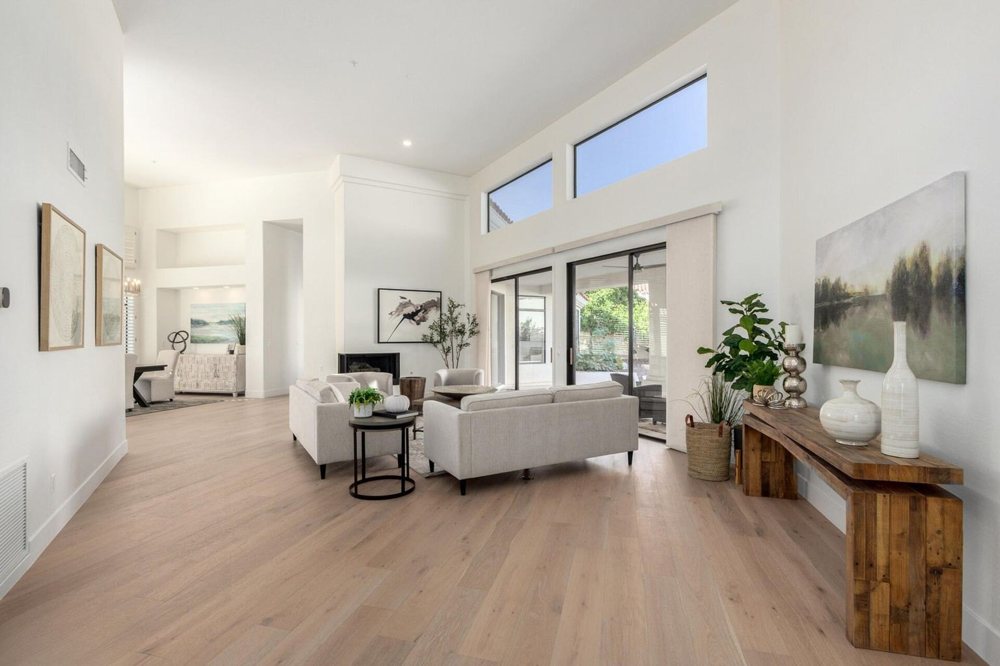

We consider the satisfaction of our clients to be our greatest compliment, and take pride in our high volume of repeat business & referrals. We would love to add you to this growing list!
Carolyn Glass is the first realtor we have worked with who made us feel at all times like we were her top priority. From helping us to stage the house (even helped with moving furniture and brought staging items from her own supplies!) to always steering us in the right direction regarding potential buyers and negotiations, no realtor has worked for us as hard as she did! I really didn’t understand how difficult it was to be a realtor until we watched Carolyn jump through hoops to get the right deal for us. It is easy to see that her integrity means everything to her. Several times she pointed out how something might become a conflict of interest, and she wanted to make us aware of it up front. In this day and age, with so many complications regarding lending and potential litigations, having a truly experienced realtor is a must. Carolyn offers all of the experience & professionalism you could ask for, and as an added bonus she keeps a sense of humor throughout it all. And in my mind, she has exactly the right amount of support. We were able to deal with Carolyn almost exclusively. But when she did have conflicts, her partner was also great to work with. We never felt that we were “pushed off” on an under-experienced assistant. And finally, she’s not only knowledgeable when house hunting, she’s also very fun to house hunt with!
Working with Rhonda was such a pleasure. She showed me a number of different neighborhoods and quickly figured out what I was looking for. Her market knowledge was particularly helpful when it came time to make an offer. She was more focused on me getting the right property at a fair price than she was on making a sale. She had my best interests in mind. Rhonda was also there after the property closed to help me find pool people, landscapers, pest control, house cleaners and handymen. It was a 5-star experience!
Some people are truly meant for certain careers, and when you love what you do, it shows in your performance. As New Yorkers, my wife and I are naturally skeptical and always prepared for whatever comes our way. So, when we started looking for a second home in Scottsdale, my wife took the lead on the research—and she found Amy Brown. From the very beginning, Amy impressed us with her knowledge and professionalism. My wife was sold on Amy from the start, and it didn’t take long for me to see why. Amy not only knows what she’s talking about, but she also genuinely cares about her clients. She guided us through every step of the process, making us feel confident and well-supported throughout. If you’re looking for a realtor who is dedicated, knowledgeable, and truly passionate about what they do, Amy Brown is the perfect choice!
I recently purchased my dream home in Arizona with the help of Lori Wilson and Kim Jones. I was an out of state buyer so I needed quite a bit of guidance. Lori was quite patient with me and only directed me to the homes that she knew that I would like. The home that I purchased is perfect for me, and I still cannot believe that my dream has actually become a reality. I look forward to many years in my new home, and if I choose to relocate I will give Lori a call to find me my next home. Thank you so much Lori and Kim for everything you did to assist me with my Arizona property.
We had the pleasure of working with Rhonda for both selling our home and purchasing a new home. Rhonda is a very professional and caring realtor. Whenever we called, seven days a week, she was always available for us. We loved the level of attention she showed us with her excellent client service. It is always a stressful time to buy and sell a house, but she took that stress away. We couldn’t speak more highly of Rhonda and would not hesitate to recommend her to anyone needing to buy or sell their home.
Amy Brown is hands-down the best realtor we have ever worked with. She is extremely knowledgeable, professional, and very experienced, and she strives to build a genuine relationship with her clients. Amy provides honest communication and is very timely and punctual in all interactions with the clients she serves. She works hand-in-hand with you, and truly wants the best possible outcome for you. We could not be more pleased with our overall experience working with Amy Brown, and we would not hesitate to recommend her to others.
We have worked with Carolyn to buy and sell multiple properties in Scottsdale, Chandler, and the West valley across many price points. Carolyn and her team are incredibly knowledgeable, patient, kind, and well connected. Their experience shows in their negotiations, property presentation, and understanding of the micro-markets throughout the valley. HIGHLY recommend the Glasshouse Collective to anyone looking for a realtor.
Rhonda is an incredible realtor and helped me to find my new home, a 2bed 2bath condo that checks all my boxes! Throughout the whole process, she was extremely responsive, organized, and walked me through everything as this was my first time buying a property. We toured several properties, and Rhonda’s market knowledge and experience helped me determine what I truly wanted in my new home as well as what is a good investment. She also guided me through making an offer, countering, inspection, etc. — she made sure every process went smoothly. The office team was super helpful as well in securing and finalizing all the documents towards the end. Thank you Rhonda for supporting me during such a big life decision. I cannot recommend her and her team enough!
Amy has been the best realtor we’ve ever worked with! She went above and beyond helping us find a dream home during the peak of the market. Then a few years later she quickly and efficiently helped us sell it for a significant profit. She’s brilliant, strategic, reliable, quick to respond, and a joy to work with.
Carolyn was fantastic! Very knowledgeable in all areas. She helped us find and get into our new house in minimum time with zero hassles. She was always available and had great communication with us through the whole process. Great realtor!
Clients most often describe Glasshouse Collective as knowledgeable, diligent and genuinely invested in the outcome. Reviewers highlight constant communication, skillful negotiation and a team that treats clients like family, across Scottsdale, Paradise Valley, Arcadia, Phoenix and the East Valley.
We explain every step in plain language, from pre-approval through closing, and we never rush a decision. First-time buyers work directly with a licensed REALTOR® on the team who reviews the home, the location and the terms with them before any offer is written.
Glasshouse Collective has closed over 350 transactions and over $250 million in Greater Phoenix real estate. The team’s backgrounds span residential sales, marketing, hospitality, appraisal and new-home development, and include a Certified Luxury Home Marketing Specialist and a Master Certified Negotiation Expert.
Additional reviews are published on the team’s Compass agent profiles and Google Business Profile. To speak with a past client directly, call (602) 686-6662 and we will connect you.

Sound and trustworthy advice, the best price and terms, and communication you can count on.
(602) 686-6662